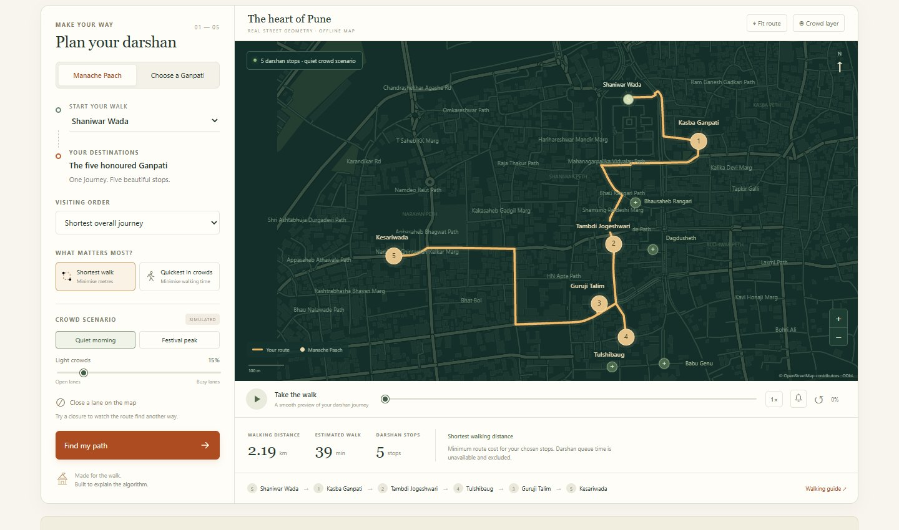
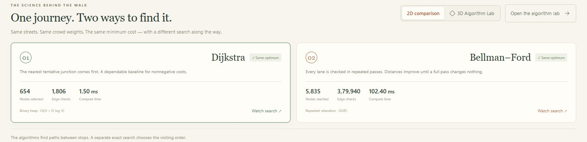
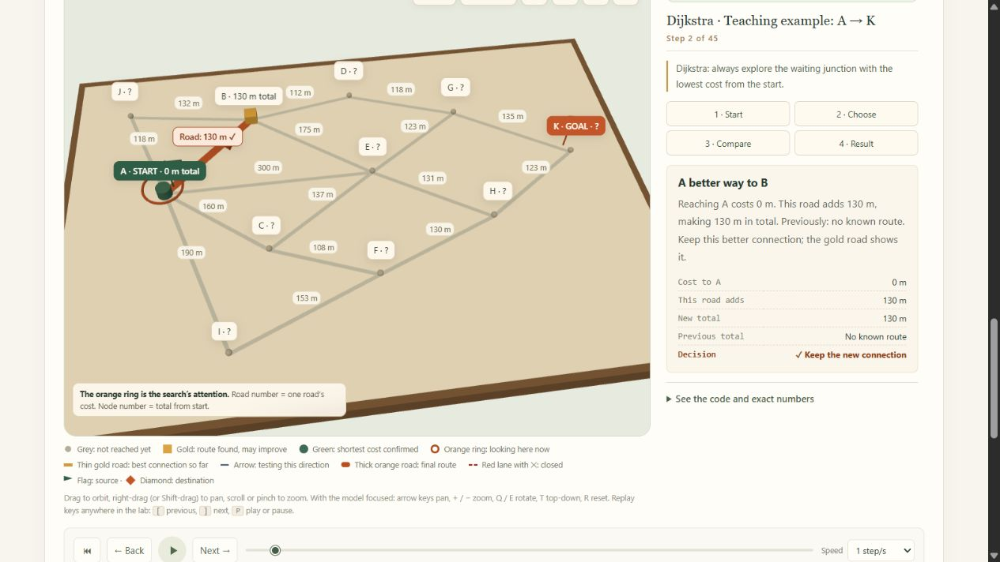

DarshanDisha
Finding the shortest way to Bappa.
An offline simulator that plans a walk through Pune's five honoured Ganpati mandals and shows how Dijkstra and Bellman–Ford each find the shortest route.
Ganeshotsav crowds turn a short walk into a hard choice.
Every year, lakhs of visitors walk the narrow lanes of Kasba, Budhwar and Narayan Peth to see the five Manache Ganpati. A visitor standing at Shaniwar Wada has to answer four questions.
Where am I going?
Five required stops, plus famous mandals such as Dagdusheth nearby.
Which route should I take?
There are 120 possible visiting orders and hundreds of lanes between them.
Why this route?
The answer must be explainable, not just a line on a map.
What if a lane is crowded?
The shortest walk in metres is not always the quickest when lanes are packed.
One app, two audiences.
Darshan Journey
- Visit all five, in optimal or traditional order
- Shortest walk or quickest in crowds
- Close a lane and watch it re-route
- Animated walk and printable walking guide
Algorithm Lab
- Dijkstra and Bellman–Ford on the same graph
- Step-by-step trace replay with pseudocode
- 3D tabletop model with cost pillars
- Real operation counts, not animation time
A truthful simulation
- Real OpenStreetMap street geometry
- Crowds and closures clearly labelled simulated
- Queue time shown as unavailable, never invented
- Runs fully offline, no API keys
The old city, as a weighted graph.
w(e) = polyline length in metres
// time mode (simulated crowds)
base = length / 1.25 m/s
crowd = 1 + f × (0.2 + 4·hotspot + corridor)
w(e) = base × crowd // always ≥ base
Extracted from OpenStreetMap (bbox 18.508–18.524 N, 73.846–73.864 E). Access=no, private and foot=no ways are filtered out.
Same answer. Different searches.
Dijkstra
Greedy. Settles the nearest tentative junction first. With non-negative weights, a settled cost is final.
- Time
- O((V + E) log V)
- Structure
- binary min-heap
- Stops
- when target is settled
Bellman–Ford
Relaxes all edges in passes until a full pass changes nothing. Never declares a node final early.
- Time
- O(V · E)
- Structure
- edge list
- Stops
- pass with no updates
The path algorithms solve one leg at a time. Choosing the order of the five stops is a separate exact search over all 5! = 120 orders.
Watch every edge check happen.
| Algorithm | Selected | Edge checks | Updates | Cost |
|---|
Both agree on 2,192 m. The work differs by 210×.
Counts are summed over the five legs and produced by engine.mjs. Compute time depends on the device, so the deck compares operation counts.
5! = 120 orders. We check every one.
Pairwise leg costs are cached, so 120 orders need only 30 shortest-path calls. Swapping Tulshibaug and Guruji Talim saves 79 m over the ceremonial order.
At festival peak, the longer walk is quicker.
Walking 629 m more saves 17 simulated minutes. The order changes too: Kesariwada moves up to second.
Both algorithms still agree on the minimum, now measured in seconds. Crowd multipliers are at least 1, so every weight stays non-negative and Dijkstra remains exact.
Click a card to redraw that route. Crowd values are teaching assumptions, not live data.
“On the way” is measured on the graph, not by eye.
− cost(S, T)
- ≤ 400 mextra walking for a stop to be suggested
- ≤ 8 minextra estimated walking time
- 2 maxsuggestions shown, and the visitor chooses Add or Skip
From OpenStreetMap to a replayable trace.
HTML, CSS and vanilla ES modules. Zero npm runtime dependencies. Works offline from a local Node server or as a static Vercel build.
What the visitor and the student see.



24 automated tests. 24 passing.
- An independent Floyd–Warshall oracle agrees with both algorithms.
- At festival peak, the quickest route is longer but saves over a minute.
- The chosen order is the minimum of all 120 orders.
- Closed lanes never appear in a route; isolated targets report no path.
- Replaying a trace backward or by scrubbing rebuilds the exact state.
What we claim, and what comes next.
- Simulated crowdsNo live crowd or queue feed. Presets are labelled as teaching scenarios.
- Representative entrancesPins mark street approaches, not verified festival gates.
- Non-negative weights onlyBellman–Ford here does not demonstrate negative cycles.
- Arrival-time queue modelLet expected darshan queues influence the stop order.
- Field-verified dataSurvey festival entrances and one-way pandal routes on site.
- More algorithmsBidirectional Dijkstra and contraction hierarchies for larger maps.
Thank you.
Questions?
npm start → localhost:5173npm test → 24 / 24Map data © OpenStreetMap contributors, ODbL 1.0. Interface and illustrations are original.